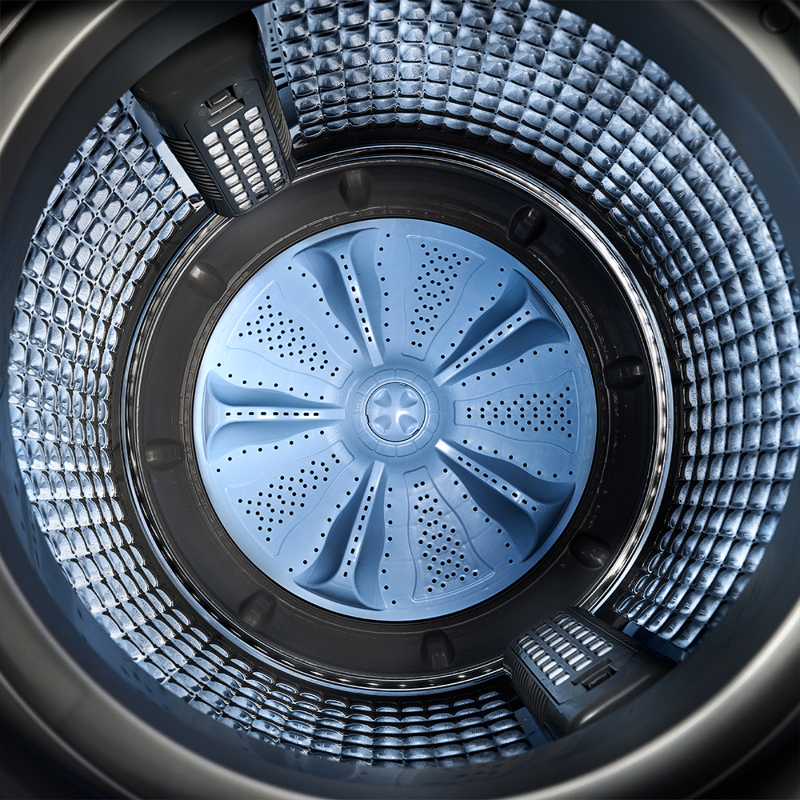

Nuestros Productos
Nevera LG 334 litros VT34KPM
Nevera LG con diseño elegante ideal para ti, de 334 litros, proporciona frescura de manera uniforme y rapida gracias a su tecnologia Cooling.


Nevera LG 420 litros GB41WPP
Nevera Bottom Freezer de gran capacidad tipo Europeo con sideño sofisticado que encaja perfecto en las cocinas modernas, eliminacion de bacterias hasta de un 99.99% que permitira tener sus alimentos mas frescos y saludables.

Nevera MABE 230 litros RMA247PJCG
Nuestra Nevera MABE te da la tranquilidad de ahorra hasta un 56% de energia con el compresor Eco Advance y gas refrigerante R600. cuida tu bolsillo con componentes de alta eficiencia que maximizan el ahorro de energia.

Nevera MABE 394 litros RMP421FYCU
Nuestra nevera Mabe RMP421FYCU Inox maneja tecnologia Home Energy Saver que te permitira ahorra hasta 67% de energia. cuida el ambiente con el compresor Eco Advance y su gas refrigerante R600a.


Nevera WHIRLPOOL 518 litros WD1610S
Un nevecón WHIRLPOOL es sinónimo de calidad, eficiencia y duracion. Eficiente energeticamente te permite preservar los alimentos hasta por 15 dias con las mejores caracteristicas.

Nevera WHIRLPOOL 234 litros WRW22CKTW
Con esta nevera WHIRLPOOL serás capaz de dar mayor conservación a tus alimentos gracias a su tecnologia que los mantiene mas frescos controlando la humedad y el frio al interior.
Nevera CHALLENGER 231 litros CR249
Su diseño moderno y elegante proporsiona una atractiva apariencia y mayor espacio interno.

Nevera CHALLENGER 300 litros CR317
Su diseño moderno y elegante proporsiona una atractiva apariencia y mayor espacio interno.
Lavadora LG 46 Libras WT21MV6
Lavadora LG carga superior con Inteligencia artificial AI DD cuidado inteligente, mayor proteccion de tus prendas, función turboWash, gracias a su aplicacion LG ThinQ permitira conectarce facilmente con tu lavadora de manera remota desde tu celular asi podras encender tu lavadora e iniciar o descargar ciclos adicionales con solo tocar un boton.


Lavadora LG 42 Libras WT19MV6
Lavadora LG carga superior con Inteligencia artificial AI DD cuidado inteligente.con nuevo diseño de filtro atrapa pelusas que elimina mayor porcentaje de polvo proporcionando una mejor limpieza al interior de la tina, con sus 6 movimientos de lavado impulsados por el Motor Inverter Direct Drive para lavar diferentes tipos de tela.


Lavadora mabe 31 Libras LMA4120WDGABO
Lavadora MABE carga superior es ideal para ayudarte a ahorrar tiempo y esfuerzo, gracias a sus 9 ciclos automáticos e inicio programado. cuenta con tecnología Safe & Clean que evita la reproducción de bacterias un 99.99%.
Lavadora mabe 40 Libras LMA8120WDGABO
Esta lavadora MABE carga superior con motor Inverter es ideal para ayudarte a ahorrar tiempo y esfuerzo, gracias a sus 9 ciclos automáticos e inicio programado. cuenta con tecnología Safe & Clean que evita la reproducción de bacterias un 99.99%.

Lavadora whirlpool 44 Libras WW20LTAHLA
Lavadora Whirlpool carga superior de 20 KG gris con tecnología Smart Action para mayor remoción de manchas, ahorro de agua y energético, tapa de vidrio templado y panel digital en tapa con opcion de bloqueo cuenta con 11 ciclos, opcion de remojo adicional luz led.
Lavadora whirlpool 56 Libras 8MWTWLA41WJG
Lavadora Whirlpool carga superior de 25 KG gris cuenta con el innovador Xpert System que remueve mejor las manchas y cuida de los colores de tus prendas, con Impeller 3D, 8 ciclos automaticos, ahorro de agua y un ciclo adicional de remojo.
Lavadora CHALLENGER 26 Libras WWI12ASHLS
Lavadora challenger carga superior de 12 KG gris cuenta con un sistema de lavado Impeller y tinade acero inoxidable, puedes lavar hasta 12 jeans en cada ciclo de limpieza.
Lavadora CHALLENGER 22 Libras WWI10ASHLS
Lavadora challenger carga superior de 10 KG gris cuenta con un sencillo y practico diseño. la capacidad maxima de carga de este electrodomestico es de 22 libras, cuenta con una opcion de seleccionar entre sus 8 niveles de agua segun tus necesidades.
Televisor LG 50 pulgadas 50UT8050
Descubre el televisor LG Ultra HD y experimenta una nueva era de entretenimiento. con su pantalla de 50 pulgadas y resolucion 4K, disfrutaras de imagenes nitidas y llenas de vida, ahora tu televisor contara con un sistema operativo webOS de LG.


Televisor LG 70 pulgadas 70NANO80
Descubre el televisor LG Ultra HD con imagenes que cobran vida con colores puros de LG Nanocell,mayor calidad visual y auditiva gracias a su procesador de Inteligencia artificial Alpha 5 Gen 7.


Televisor CHALLENGER 50 pulgadas 50KG85
Telvisor Challenger de 50 pulgadas 4K es un perfecto compañero para transformar tu sala en un cine personal, su pantalla amplia te sumerge en colores y detalles nitidos, haciendote sentir parte de una escencia unica.
Televisor CHALLENGER 65 pulgadas 65KG85
Telvisor Challenger de 65 pulgadas 4K es un perfecto compañero para transformar tu sala en un cine personal, su impresionante pantalla y calidad de imagen convertira cada pelicula en una seroie que cobrara vida, sumirgiendo a tu familia en aventuras épicas.
Estufa MABE 50 centimetros TX1G-6CON
Con la estufa Mabe tienes una gran versatilidad, prepara grandes platos en su quemador jumbo, Diseño ideal para tu hogar. limpia tu horno tan facil como un vidrio, cubierta sellada de acero inoxidable.
Estufa MABE 76 centimetros EMC30KXX
Con la estufa Mabe tienes una gran versatilidad, prepara grandes platos en sus quemadores jumbo, Diseño ideal para tu hogar. limpia tu horno tan facil como un vidrio, evita salpicaduras en la pared. recubrimiento de Easy Clean, cubierta sellada de acero inoxidable.
Estufa INDURAMA 60 centimetros FLORENCIA
Con la estufa Indurama tienes un acabado gris, cuenta con 4 quemadores 1 triple corona, 2 rápidos y 1 semi rápido, parrillas en hierro fundido y plancha asadora, horno con doble vidrio de luz, grill a gas y sistema cortagas.
Estufa INDURAMA 76 centimetros ROMA
Con la estufa Indurama tienes 76 centimos para poderlos disfrutar, 5 quemadores sellados, tapa de vidrio templado' tablero en acero inoxidable, parrilla asadora, grill a gas y corta gas.
Estufa ABBA 50 centimetros AG201-5
Para que cocinar sea una experiencia diferente, la estufa Abba Master Chef en vidrio templado te proporciona rapidez en la coccion,funcionalidad con el horno a gas que incluye gratinador electrico, encendido automatico y parrillas en hierro fundido.

Estufa ABBA 71 centimetros RG803-3
Para que cocinar sea una experiencia diferente, la estufa Abba Master Chef en vidrio templado de 6 puestos, con puertas y mesa en vidrio de seguridad, cuenta con 3 parrillas en hierro fundido y vidrio espejo en la puerta del horno el cual aporta mucha mas visibilidad al interior que permite monitoriar tus platos mientras cocinas, gracias a su bombillo interno en el horno.
Estufa SUPERIOR 50 centimetros S-7004-TITANIUM
Para que cocinar sea una experiencia diferente, la estufa Superior maneja cubierta en acero inoxidable, parrillas en alambron, cuenta con 3 quemadores semi-rápidos y un quemador rapido de alta potencia, maneja grill electrico.
Estufa SUPERIOR 50 centimetros S-7003
Para que cocinar sea una experiencia diferente, la estufa Superior maneja cubierta en acero inoxidable, parrillas en alambron, cuenta con 3 quemadores semi-rápidos y un quemador rapido de alta potencia.